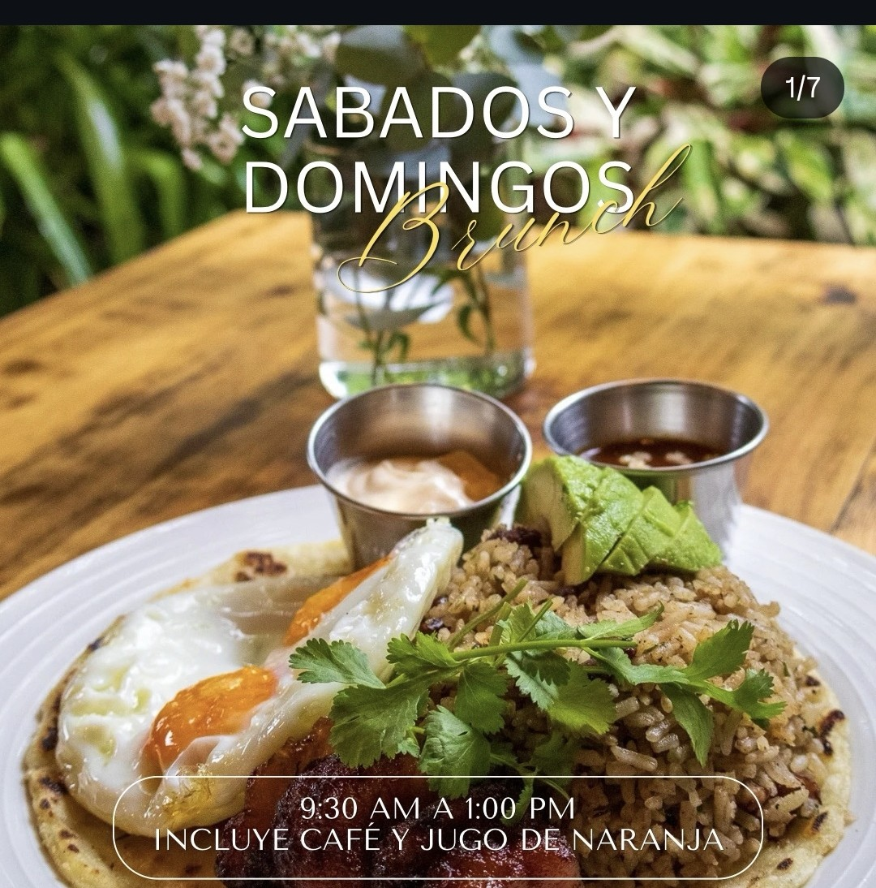
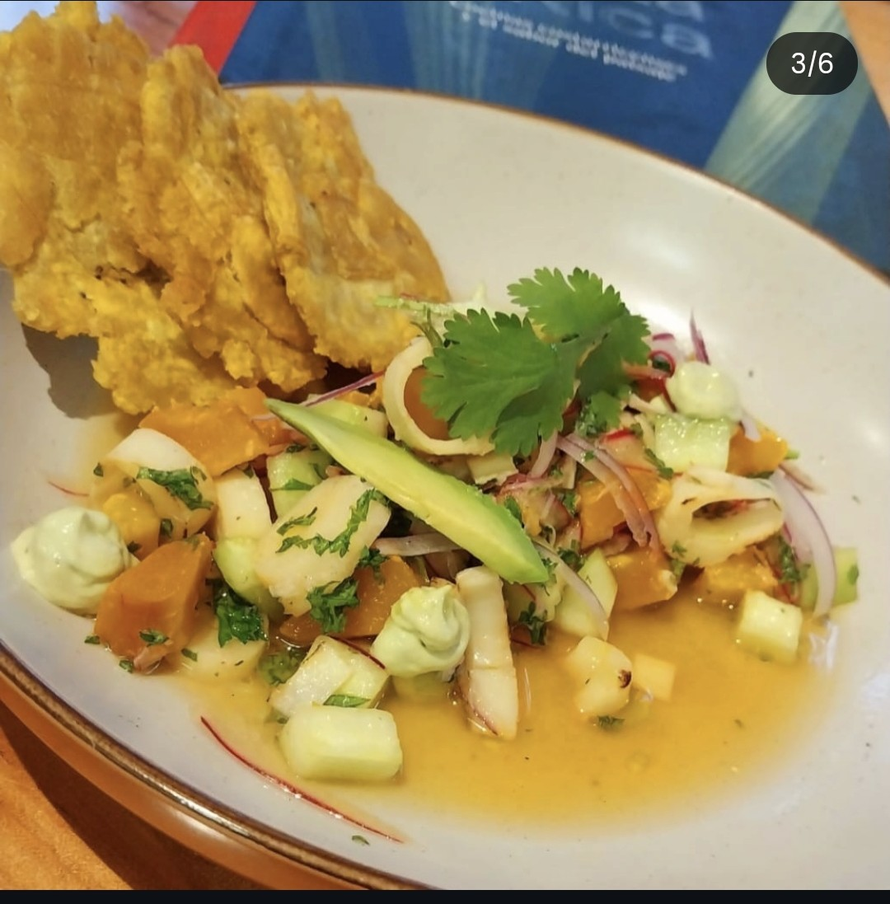

Café y jardín en Santa Elena
Un jardín y buena comida
Brunch de fin de semana, cazuelas, sándwiches artesanales, pastas y café de especialidad, con técnica clásica creativa de Esteban Román y Carolina Marín. Pet-friendly.


3 secciones en la carta, todas en el jardín
La carta
Brunch, platos fuertes y café
Elegí una sección para ver los platillos, o usá el cotizador si estás planeando una celebración.
Así de simple
De la reserva a tu mesa en el jardín
-
1
Contanos qué estás planeando
En el cotizador elegís brunch, almuerzo o un evento privado, y tu presupuesto. Te llega una respuesta hecha para vos.
Ir al cotizador -
2
Reservá tu mesa
Elegís el día y el horario que te sirven, y la solicitud sale lista por WhatsApp.
Reservar mesa -
3
Confirmá o cambiá tu reserva
¿Ya reservaste? Tenés un canal directo para confirmar, reprogramar o consultar.
Ya reservé


El jardín
Técnica clásica, ritmo de jardín
Triskel Café y Jardín es un espacio al aire libre en Santa Elena, San Isidro de Heredia, donde el tiempo se desacelera: brunch de fin de semana, platos para compartir y café de especialidad, todo servido entre plantas.
- En la cocina:
- Espacio al aire libre, ideal para celebraciones
- Pet-friendly: tu mascota es bienvenida en el jardín
- Entrada y sanitario accesibles para silla de ruedas
Chefs según la biografía de Instagram (@triskelcafejardin). Confirmar cómo quieren que se presenten en el sitio.
Opiniones
Lo que dicen en Google
Calificación pública de Google revisada el 23-sep-2026. El total de reseñas no es visible sin iniciar sesión: lo confirmamos con Triskel. Los testimonios en el sitio se agregan solo con autorización de cada comensal.
Visitanos
Estamos en Santa Elena, San Isidro de Heredia
Contiguo a Sibö Chocolate, Calle Bombacho, Santa Elena
,
Horario
Horario confirmado por la publicación de apertura en Instagram (5-mar-2025) y por el estado en vivo de la ficha de Google. Confirmar si sigue vigente.
Preguntas frecuentes
Antes de tu visita
¿Cómo reservo una mesa?
Por WhatsApp o desde la página Reservar: elegís el día y el horario, y la solicitud sale lista para enviar.
¿Dónde están ubicados?
En Santa Elena, San Isidro de Heredia, contiguo a Sibö Chocolate. La ubicación exacta la abrís en Google Maps o Waze desde la sección Visitanos.
¿Qué días atienden?
¿Puedo llevar a mi mascota?
Sí, Triskel es pet-friendly: tu mascota puede acompañarte en el jardín.
¿Puedo reservar el jardín para un evento privado?
Sí. Usá el cotizador para contarnos si es cumpleaños, compromiso o un grupo, y Triskel te responde con opciones por WhatsApp.
Tu mesa en el jardín empieza con un mensaje
Escribinos y te ayudamos a elegir el día y el horario.